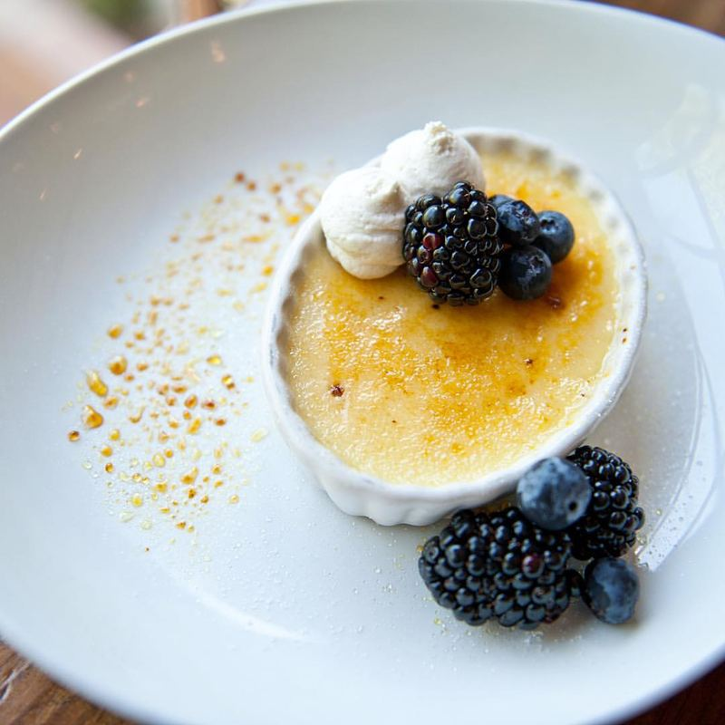

Dessert & After Dinner
From our pastry kitchen: whoopie pies, warm bread pudding and house made ice cream and sorbet, with dessert wines and after-dinner cocktails.
Menu dated October 3, 2026 · View printable PDF (PDF, 934 KB)

Dessert
Mini Whoopie Pie Trio$10
Chocolate: Traditional Cream Filling / Pumpkin: Cream Cheese Filling / Apple Cider: Spiced Caramel Cream Filling
Cranberry Orange Roulade$12
Orange Sponge Cake / Cranberry Mascarpone Mousse / Cranberry Coulis | , Spice Orange Sorbet
Pumpkin Cheesecake Blondie Skillet$15
Served Warm | , Cinnamon Ice Cream / Butterscotch Sauce
Apple Pie Bread Pudding$13
Served Warm | , Pie Crust Crumble / Vanilla Creme Anglaise
North House 'Almond Joy'$14
Coconut Macaroon | , Dairy Free Ganache / Candied Almond Slices | , Toasted Coconut / Dark Chocolate Sorbet
House Made Ice Cream & Sorbet$9
Vanilla or Chocolate Ice Cream / Seasonal Sorbet / Seasonal Flavors
Dessert Wines
Taylor-Fladgate 10 Year Tawny$12
Taylor-Fladgate 20 Year Tawny$18
Taylor-Fladgate 30 Year Tawny$26
Taylor-Fladgate 40 Year Tawny$40
Graham's 2017 Vintage Port$21
Fonseca 1997 Vintage Port$27
Broadbent 'Rainwater' 3 Year Madeira$14
Alvear Pedro Ximenez Solera 1927$15
Gerard Bertrand Banyuls$10
Clos Haut-Peyraguey Sauternes$15
After Dinner Drinks
Sweet & Salty$14
Caramel Vodka | , Dorda Salted Caramel / Two Stack Irish Cream | , Coarse Sea Salt
Why Is This OK?$14
Bubba's Brown Sugar Whiskey | , Cointreau | , Lime
Alma Finca 'Bout It$14
Alma Finca Orange Liqueur | , Two Stack Irish Cream
It's Called Chocolat!$12
Waypoint Chocolate Vodka | , Licor 43 Chocolate / Creme de Cacao
The Pistachio$16
Waypoint Vanilla Vodka | , Amaretto / Two Stack Irish Cream | , Blue Curacao
The PSL$16
Crop Pumpkin Spiced Vodka | , Licor 43 Creme Brulee / Borghetti Espresso Liqueur | , Wild Moon Chai | , Espresso
Transcribed from the printable menu dated October 3, 2026. Items and prices are as printed and may change; please call 860-404-5951 to confirm.
Save room for dessert
Dinner: Mon–Thu 3–9 pm · Fri & Sat 3–10 pm · Sun 3–8 pm